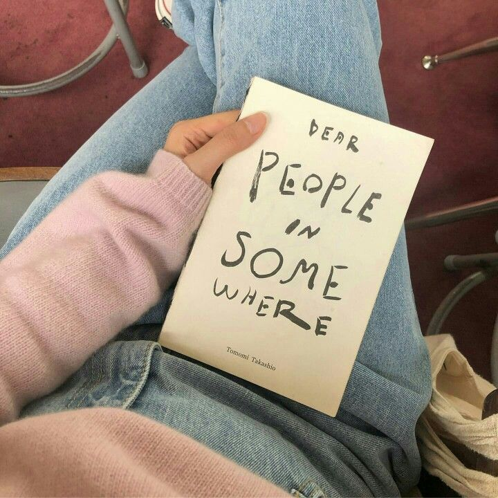
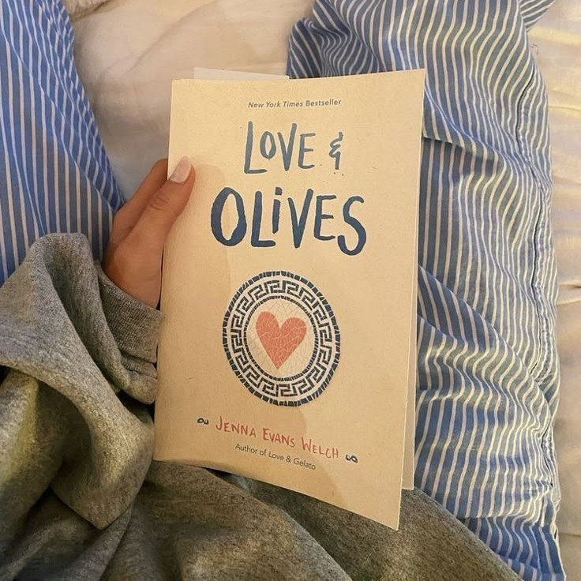
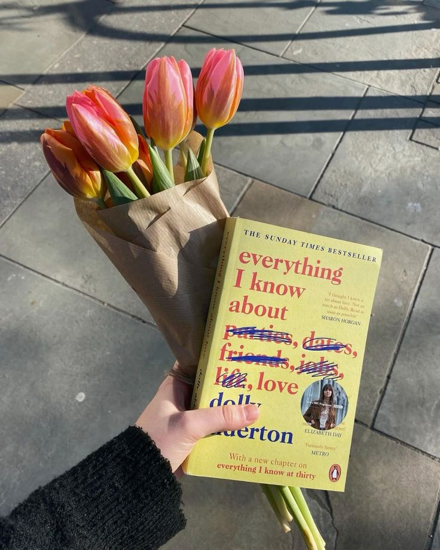

todas las reseñas
-

Dear People in Somewhere – Una carta íntima a lo cotidiano
Hay libros que no gritan, que no buscan impresionar con giros argumentales ni finales inesperados. Dear People in Somewhere es uno de esos libros que susurra. Que se toma su tiempo. Que se siente más como una conversación entre amigas o una carta encontrada en una caja de recuerdos. Lo empecé sin demasiadas expectativas y terminé subrayando frases, releyendo párrafos y sintiendo que, de algún modo, esa ciudad lejana llamada “Somewhere” también hablaba un poco de mí.
-

Love & Olives – Un viaje al corazón de Grecia y los secretos familiares
Love & Olives es mucho más que una historia de romance adolescente. Es un viaje a Santorini lleno de luz, mar turquesa y aceite de oliva, pero también de preguntas no resueltas, heridas familiares y segundas oportunidades. Desde las primeras páginas, seguimos a Liv mientras se enfrenta a una invitación inesperada: reencontrarse con su padre —desaparecido de su vida hace años— y sumarse a su obsesión por encontrar la Atlántida. Pero lo que parece una excusa para reconectar con el pasado, se convierte en una experiencia transformadora.
-
The Woman Destroyed – La soledad que grita en voz baja
Leer The Woman Destroyed es como entrar en la mente de una mujer en ruinas… pero con plena conciencia. Simone de Beauvoir no necesita artificios para mostrarnos el derrumbe: le basta con la vida cotidiana, las palabras truncas, los silencios. Esta novela —o más bien, esta confesión— duele por lo cercana. A través de un diario íntimo, seguimos a una mujer enfrentando el vacío, la vejez, la traición y, sobre todo, la pérdida de sentido. No hay moraleja ni redención fácil, solo la crudeza de una existencia que se deshace en tiempo real.
-

Everything I Know About Love – Caos, amistad y todas las versiones del amor
Leer Everything I Know About Love es como sentarte a charlar con una amiga brillante, caótica y brutalmente honesta. Dolly Alderton convierte sus memorias en una especie de mapa emocional de lo que significa crecer: entre fiestas, corazones rotos, mudanzas compartidas, autoengaños y momentos de ternura inesperada. Aunque el título promete hablar de amor, el verdadero corazón del libro es la amistad femenina: ese tipo de vínculo que te salva cuando todo lo demás tambalea.